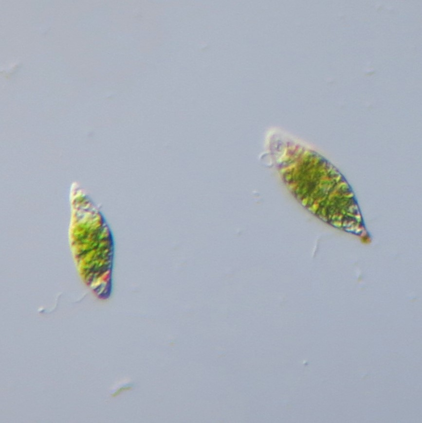
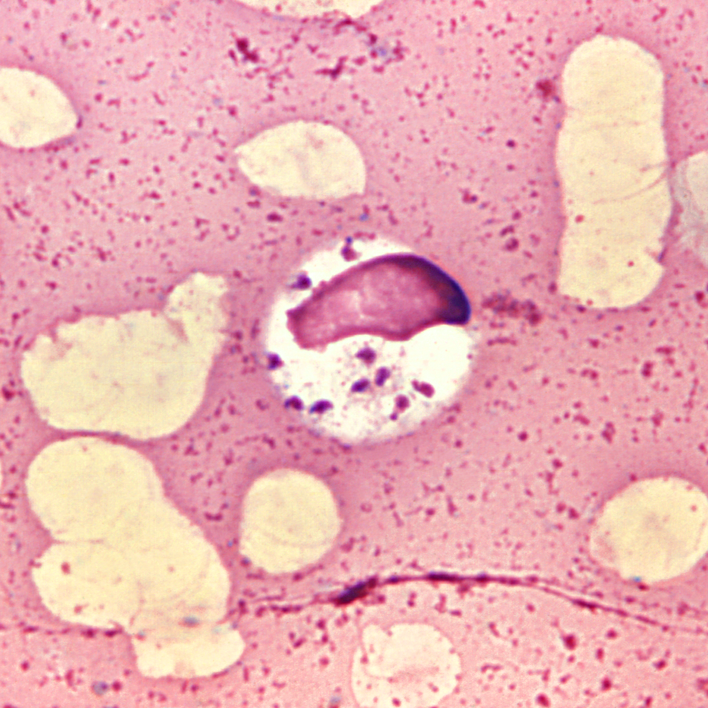
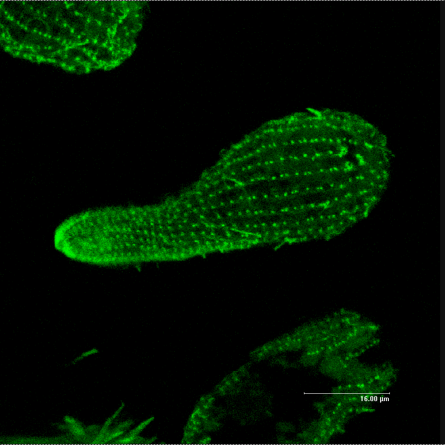
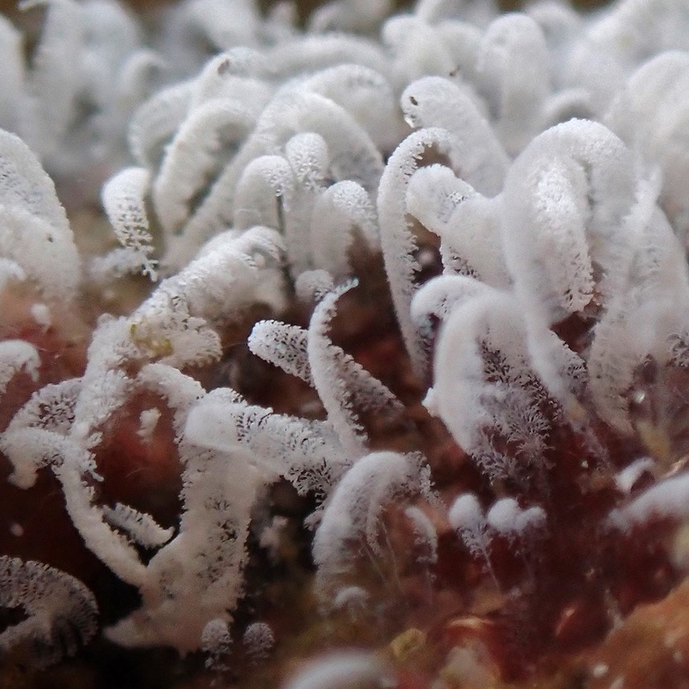
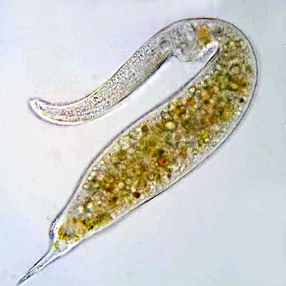
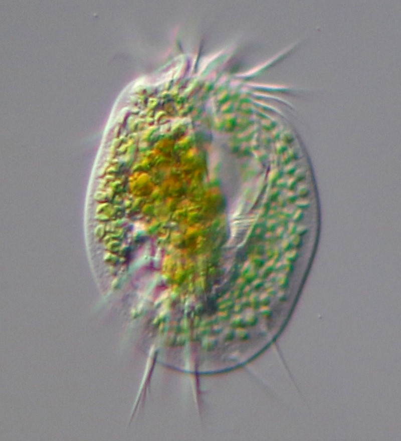
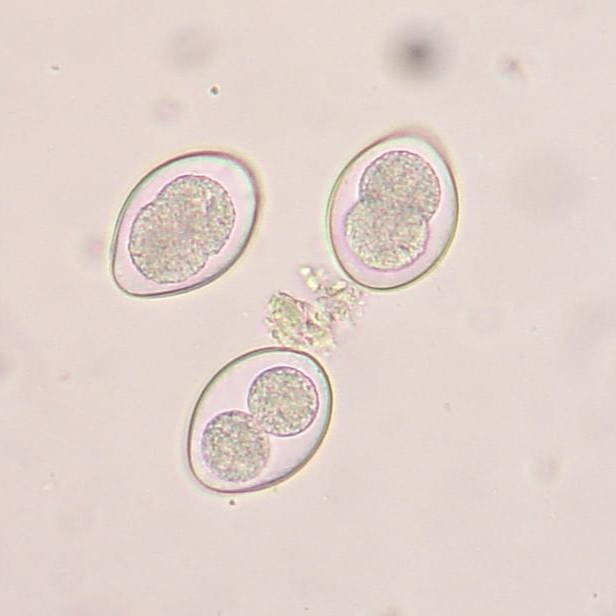
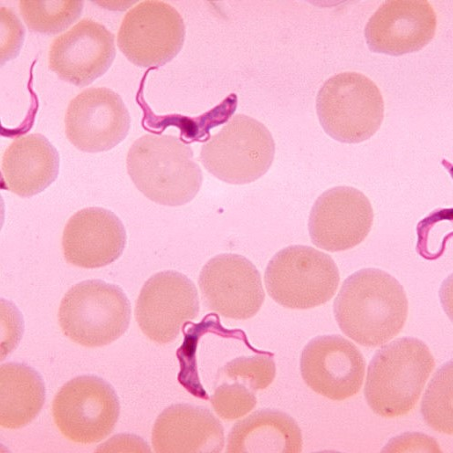
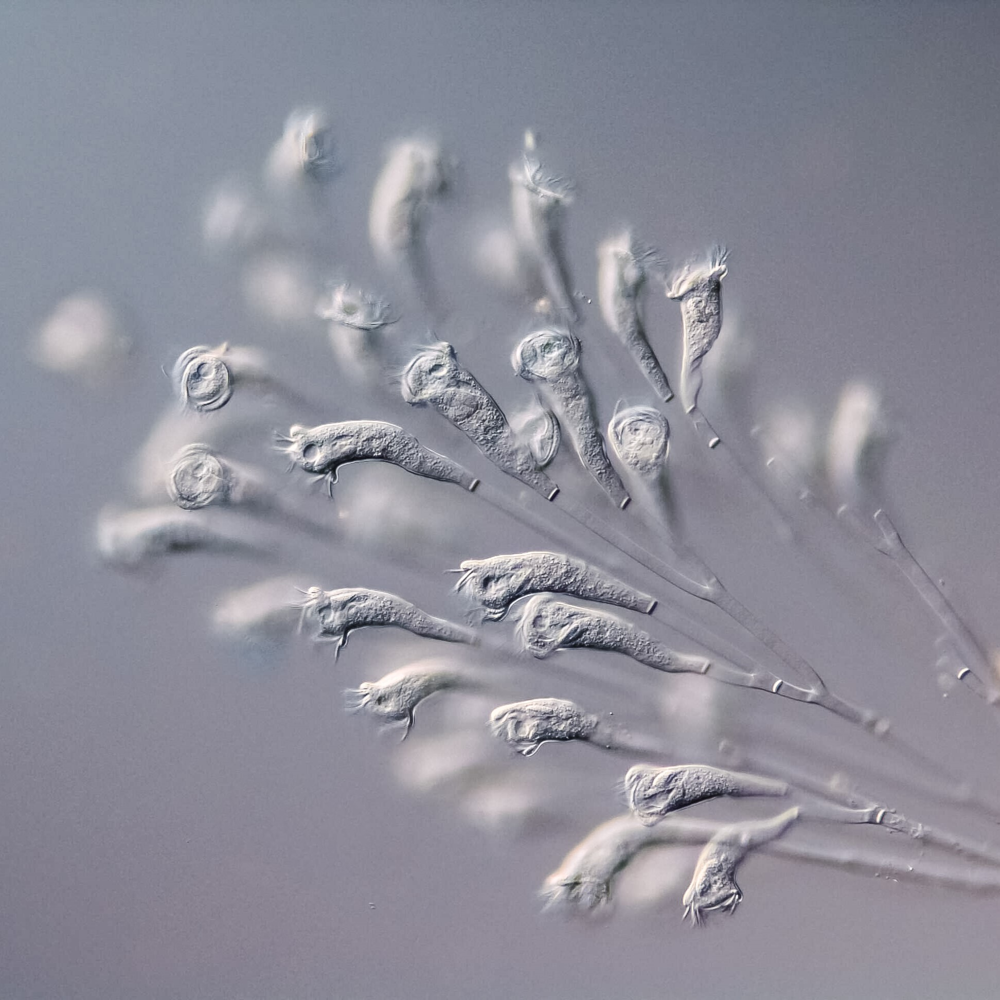
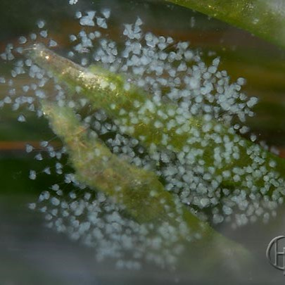

Euglena is a genus of single cell flagellate eukaryotes. It is the best known and most widely studied member of the class Euglenoidea, a diverse group containing some 54 genera and at least 200 species. Species of Euglena are found in fresh water and salt water. They are often abundant in quiet inland waters where they may bloom in numbers sufficient to color the surface of ponds and ditches green (E. viridis) or red (E. sanguinea). The species Euglena gracilis has been used extensively in the laboratory as a model organism. Most species of Euglena have photosynthesizing chloroplasts within the body of the cell, which enable them to feed by autotrophy, like plants. However, they can also take nourishment heterotrophically, like animals. Since Euglena have features of both animals and plants, early taxonomists, working within the Linnaean two-kingdom system of biological classification, found them difficult to classify. It was the question of where to put such "unclassifiable" creatures that prompted Ernst Haeckel to add a third living kingdom (a fourth kingdom in toto) to the Animale, Vegetabile (and Lapideum meaning Mineral) of Linnaeus: the Kingdom Protista.

Leishmanian is a parasitic protozoan, a single-celled organism of the genus Leishmania that is responsible for the disease leishmaniasis. They are spread by sandflies of the genus Phlebotomus in the Old World, and of the genus Lutzomyia in the New World. At least 93 sandfly species are proven or probable vectors worldwide. Their primary hosts are vertebrates; Leishmania commonly infects hyraxes, canids, rodents, and humans.

Tetrahymena is a genus of free-living ciliates, examples of unicellular eukaryotes. The genus Tetrahymena is the most widely studied member of its phylum. It can produce, store and react with different types of hormones. Tetrahymena cells can recognize both related and hostile cells. They can also switch from commensalistic to pathogenic modes of survival. They are common in freshwater lakes, ponds, and streams. Tetrahymena species used as model organisms in biomedical research are T. thermophila and T. pyriformis.

Zoothamnium was initially classified as a member of the family Vorticellidae by Ehrenberg in 1838. It was later reclassified to the family Zoothaminiidae, a new family defined by Sommer, in 1951. The unique ability of the central stalk to contract in a zig-zag pattern made the reclassification a necessity. Zoothamnium is a sessile peritrich, meaning it is a ciliated vase shaped protozoan that is nonmotile in nature. The genus comprises more than seventy species. Differentiation between species can often be difficult due to the strong similarities in form and function.

Dileptus is a genus of unicellular ciliates in the class Litostomatea. Species of Dileptus occur in fresh and salt water, as well as mosses and soils. Most are aggressive predators equipped with long, mobile proboscides lined with toxic extrusomes, with which they stun smaller organisms before consuming them. Thirteen species and subspecies of Dileptus are recognized. Dileptus species have served as model organisms used in the study of ciliary patterns, ontogenesis, conjugation and food acquisition.

Euplotes is a genus of ciliates in the subclass Euplotia. Species are widely distributed in marine and freshwater environments, as well as soil and moss. Most members of the genus are free-living, but two species have been recorded as commensal organisms in the digestive tracts of sea urchins.

Eimeria is a genus of apicomplexan parasites that includes various species capable of causing the disease coccidiosis in animals such as cattle, poultry and smaller ruminants including sheep and goats. Eimeria species are considered to be monoxenous because the life cycle is completed within a single host, and stenoxenous because they tend to be host specific, although a number of exceptions have been identified. Species of this genus infect a wide variety of hosts. Thirty-one species are known to occur in bats (Chiroptera), two in turtles, and 130 named species infect fish. Two species (E. phocae and E. weddelli) infect seals. Five species infect llamas and alpacas: E. alpacae, E. ivitaensis, E. lamae, E. macusaniensis, and E. punonensis. A number of species infect rodents, including E. couesii, E. kinsellai, E. palustris, E. ojastii and E. oryzomysi. Others infect poultry (E. necatrix and E. tenella), rabbits (E. stiedai) and cattle (E. bovis, E. ellipsoidalis, and E. zuernii). For full species list, see below. The most prevalent species of Eimeria that cause coccidiosis in cattle are E. bovis, E. zuernii, and E. auburnensis. In a young, susceptible calf it is estimated that as few as 50,000 infective oocysts can cause severe disease. Eimeria infections are particularly damaging to the poultry industry and costs the United States more than $1.5 billion in annual losses. The most economically important species among poultry are E. tenella, E. acervulina, and E. maxima. The oocysts of what was later called Eimeria stiedai were first seen by the pioneering Dutch microscopist Antonie van Leeuwenhoek (1632–1723) in the bile of a rabbit in 1674. The genus is named after the German zoologist Theodor Eimer (1843–1898).

Trypanosoma is a genus of kinetoplastids (class Trypanosomatidae), a monophyletic group of unicellular parasitic flagellate protozoa. Trypanosoma is part of the phylum Euglenozoa. The name is derived from the Ancient Greek trypano- (borer) and soma (body) because of their corkscrew-like motion. Most trypanosomes are heteroxenous (requiring more than one obligatory host to complete life cycle) and most are transmitted via a vector. The majority of species are transmitted by blood-feeding invertebrates, but there are different mechanisms among the varying species. Trypanosoma equiperdum is spread between horses and other equine species by sexual contact. They are generally found in the intestine of their invertebrate host, but normally occupy the bloodstream or an intracellular environment in the vertebrate host. Trypanosomes infect a variety of hosts and cause various diseases, including the fatal human diseases sleeping sickness, caused by Trypanosoma brucei, and Chagas disease, caused by Trypanosoma cruzi. The mitochondrial genome of the Trypanosoma, as well as of other kinetoplastids, known as the kinetoplast, is made up of a highly complex series of catenated circles and minicircles and requires a cohort of proteins for organisation during cell division.

Epistylis is a genus of usually colonial peritrich ciliates with a short oral disc and collar, and a rigid stalk. The rigid stalk differentiates Epistylis from the very similar genus Carchesium in which the stalks are contractile like those in Vorticella.

Vorticella is a genus of bell-shaped ciliates that have stalks to attach themselves to substrates. The stalks have contractile myonemes, allowing them to pull the cell body against substrates. The formation of the stalk happens after the free-swimming stage.